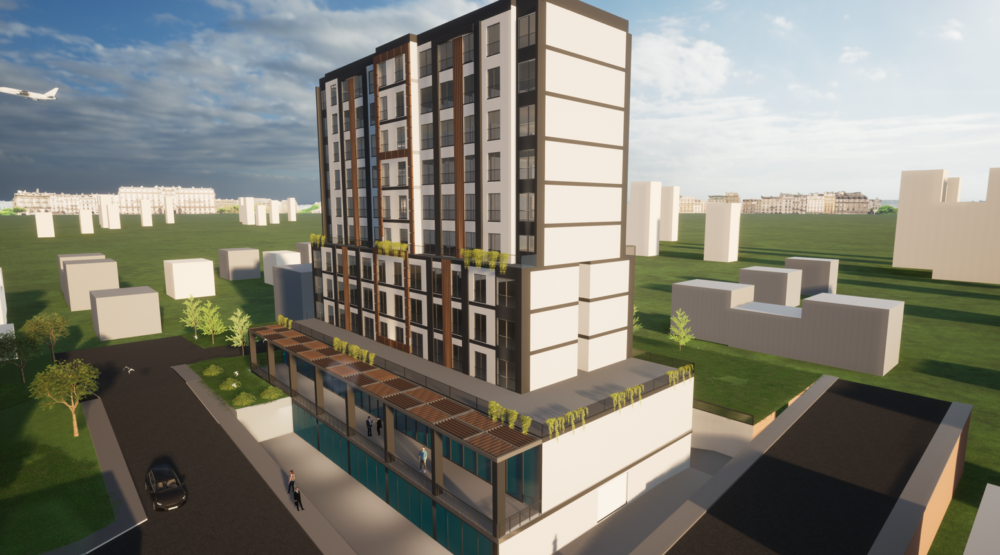

Çağının Ötesinde Fikirler. Sarsılmaz Temeller.
Kamusal Vizyon & Kentsel Tasarım

Üniversite Masterplan Önerisi
Kentsel ölçekte ele alınan, öğrenci sirkülasyonunu ve topoğrafyayı merkeze alan çağdaş yerleşke vizyonu.

Eğitim Kompleksi
Geleneksel eğitim sınırlarını yıkan, doğal ışık kontrollü esnek iç mekanlara sahip fakülte konsepti.

Sosyal Etkileşim & Gençlik Merkezi
Kullanıcıları bir araya getiren dinamik formlar ve amfi düzeniyle kurgulanmış sosyokültürel cazibe merkezi.

Yeni Nesil Bilgi Merkezi
Akustik konforun ve odaklanmanın ön planda tutulduğu, sıcak malzeme paletiyle donatılmış modern kütüphane projesi.
Ticari & Sosyal Mekanlar

Gastronomi Deneyimi
Müşteri psikolojisini yönlendiren, endüstriyel detaylar ile ahşap dokusunun harmanlandığı butik kafe tasarımı.

Premium Lounge & Cafe
Mekansal derinliğin aydınlatma armatürleri ile sağlandığı elit buluşma noktası.
Konut Kompleksleri & Yaşam Alanları

Premium Villa Tasarımı
İç-dış mekan sınırlarını saydamlaştıran, doğayla entegre ve minimal çizgilere sahip özel mülk mimarisi.

Kentsel Yaşam Kompleksi
Geniş yeşil alanlara ve rekreasyon akslarına sahip, insan ölçeğine duyarlı toplu konut yerleşkesi.

Çağdaş Konut Bloğu
Şehir dokusuyla uyumlu, modern cephe proporsiyonlarına ve malzeme hiyerarşisine sahip apartman tasarımı.